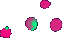

General Relativity.
Curved space and geodesics around a star.
The Arrow of Time.
Time evolution with decreasing entropy. (The initial states are special!)
Interacting particles
Reversible cellular automatons:
"Life" combined with the second order technique
Fredkin's Billiard Ball Machine
Order from disorder.
(Random initial states.)
"Gömböcök." Little dumplings emerge from a gas of particles:
Formation of dumplings that eat up everything.
 Formation of socially behaving dumplings. (They group together and do not eat their companions.)